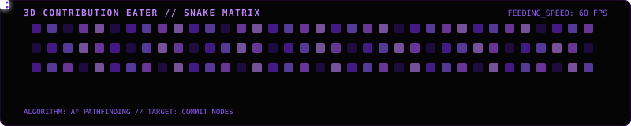

🔮 ABOUT ME & 3D NEURAL LAB
⚡ SYSTEM OVERVIEWI am an AI & Machine Learning developer passionate about engineering robust algorithmic models into reliable, production-grade applications. My technical work focuses on Predictive Healthcare Modeling, Natural Language Processing (NLP), Computer Vision, and Automated AI Workflows.
CORE_LOOP : Data Pipeline → Model Optimization → Evaluation → Deployment
|
 |
⚡ CURRENT FOCUS
🛠️ CURRENTLY BUILDING
|
📚 CURRENTLY EXPLORING
|
🚀 FEATURED FLAGSHIP REPOSITORIES
01 Heart Disease Prediction System
A machine learning diagnostic platform predicting cardiac risk factors using clinical patient parameters, comprehensive exploratory data analysis, and interactive inference deployment.
02 Resume vs Job Market Matcher
An NLP-driven semantic matching engine calculating similarity scores between candidate resumes and live job descriptions using vector embeddings and keyword extraction.
03 CivicAI Platform
AI-driven public intelligence and civic engagement architecture designed to categorize citizen reports, extract geographical insights, and automate grievance routing.
04 Fake News Detection Engine
Natural language text classification engine analyzing lexical patterns, linguistic markers, and TF-IDF representations to detect disinformation with high precision.
05 Python Algorithmic Mastery (0 to 100)
Comprehensive repository of 100 algorithmic solutions covering Data Structures, Sorting, Searching, Dynamic Programming, and Computational Problem Solving.
🧬 TECH STACK & ARSENAL
📊 SYSTEM METRICS & ANALYTICS
|
|
|
📈 3D CONTRIBUTION ACTIVITY

